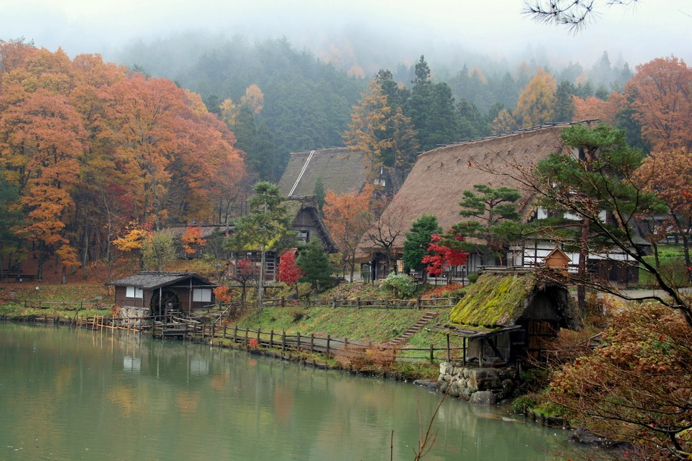

In the mountains, a 2-hour train ride from Nagoya is the little village Takayama. It is famous for its old wooden houses and scenic landscapes. You will also find many sake distilleries so if you are into that or want to learn more about different kinds of sake this is the place to go.
If you are not into sake, no problem, I recommend a visit to the Hida Folk Village open-air museum where you will be able to learn about life in the snowy mountains of Hida region over the last few hundred years by visiting beautifully reconstructed buildings from different eras of Japans past.
Takayama (??) is a city in the mountainous Hida region of Gifu Prefecture. To differentiate it from other places named Takayama, the city is also commonly referred to as Hida-Takayama. Takayama retains a traditional touch like few other Japanese cities, especially in its beautifully preserved old town. It now ranks as one of the prime candidates among travelers wishing to add a rural element into their itineraries.
Takayama gained importance as a source of high quality timber and highly skilled carpenters during the feudal ages. The city was consequently put under direct control of the shogun and enjoyed quite a bit of prosperity considering its remote mountain location. The Takayama Festival, held in spring and autumn, is considered one of Japan's best festivals.
Click on 'Book' button for fill up the details so that you cant visit this place for tour!!!